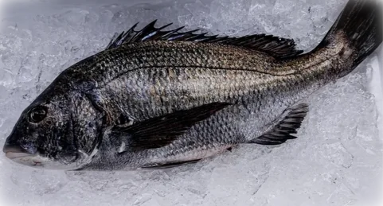

Fresh and frozen seafood for fine-dining kitchens, sushi bars, hotels, caterers, and foodservice operators across Los Angeles and Southern California.
Whether you run a fine-dining kitchen, a sushi counter, a hotel restaurant, or a catering operation, we supply the highest-grade tuna, fresh and frozen, plus fresh fish and Uni, whether it’s a one-time order or a regular one.
The products fine-dining and foodservice kitchens order most.




Tell us what you’re looking for and we’ll reach out within 24 business hours. Send a message
Our sales team goes over the products, quantities, and how often you need them.
We quote your order and set up delivery on our routes.
Fresh and frozen seafood: the highest-grade tuna, including fresh Bluefin, Yellowfin, and Albacore, our AAA Branded Frozen Tuna, fresh fish like King Salmon and Kurodai (Black Sea Bream), and Santa Barbara and Japanese Uni. See all products
We carry only the highest-grade tuna, so every loin that reaches your kitchen meets the same standard.
Our delivery routes reach Los Angeles, Orange County, San Diego, the Inland Empire, Palm Springs, Bakersfield, and Santa Barbara. See our delivery areas
We do. Whether it’s a single event or an ongoing order, tell us what you need and our sales team will take care of the rest.
Seafood prices follow the market, so we quote every order by product and quantity. That way you always get current pricing.
Yes. Pallet orders are available for larger kitchens and foodservice operations. Learn more
Send us a message and our sales team will reach out within 24 business hours.